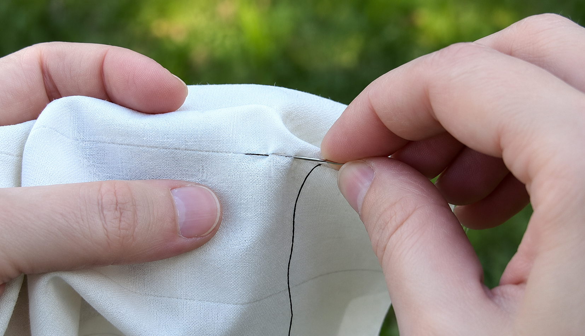

| ✦ Beranda | ☆ Profil | ✿ Galeri | ¤ Artikel | ♡ Buku Tamu | |
♡ Artikel Tentang HobiMengenal kegiatan yang menyenangkan di waktu luang. |
|||||
1. Menyanyi ☆Menyanyi adalah salah satu hobi yang kusukai. Biasanya, aku menyanyi untuk mengisi waktu luang dan merubah suasana hati. Baca Selengkapnya |
|
||||
2. Merawat Tanaman ♡Merawat tanaman merupakan kegiatan yang membuatku merasa lebih dekat dengan alam. Biasanya aku merawat tanaman untuk menyegarkan pikiran. Baca Selengkapnya |
|
||||
3. Menjahit ✿Menjahit merupakan hobi yang membantuku mengembangkan tingkat ketelitian. Aku biasanya Menjahit sambil bersantai. Baca Selengkapnya |
 |
||||
| © 2026 Aisah Ayu Nurjanah | |||||